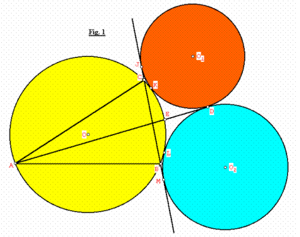

Problema: Trazamos dos círculos (O1, r1) y (O2, r2) tangentes externamente entre si, y a su vez tangentes a BC y al circuncirculo (O, R) del triángulo ABC externamente, de tal forma que la tangente común interna de (O1) y (O2) pase por A. Además (O1) y (O2) se encuentran del lado opuesto a A con respeto a BC. De manera similar trazamos los círculos (O3, r3) y (O4, r4) tangentes a AC y (O, R) con su tangente común interna que pase por B y los círculos (O5, r5) y (O6, r6) tangentes a AB y (O, R) con su tangente común interna que pase por C. Probar que:
2/r = 1/r1+1/r2+1/r3+1/r4+1/r5+1/r6
Donde r = inradio de ABC.
Solución de Juan Carlos Salazar, preparador del Equipo Olímpico de Venezuela
Ver fig. 1

Después de construir los dos primeros círculos (O1, r1) y (O2, r2), tenemos que sus puntos de tangencia con el circuncirculo (O, R) son K, L y con BC son y J, M respectivamente, además D es punto de tangencia entre sí (ver Fig. 1). Probaremos que D es excentro del triángulo ABC:
Se cumple que JK y ML concurren en el punto E (punto de corte de AD con (O)), debido a que: CK/CJ=BJ/BK=SQRT(R+r1)/ SQRT (R+r2)
Veáse por ejemplo, el cálculo de longitudes de tangentes comunes a dos circunferencias en pag 3-4 de este interesantísimo trabajo del Prof. Francisco Bellot:
http://www.campus-oei.org/oim/revistaoim/numero1/Casey.pdf
Es decir que la bisectriz exterior KJ del < K del triángulo CBK pasará necesariamente por el punto medio E’ del arco BC que no contiene a A, de manera similar tenemos que al considerar el triángulo CBL, LM es bisectriz exterior de < L y por lo tanto pasará por el punto medio E’ del arco BC que no contiene a A.
En otras palabras, el cuadrilátero JMLK es cíclico y se cumple: E’L. E’M= E’K. E’J, es decir que el punto E’ está sobre el eje radical AD de los círculos (O1) y (O2) en otras palabras E’ coincide con el punto E y como E es el punto medio del arco BC que no contiene a A, entonces AD (AE) es bisectriz de <A.
Aplicamos el teorema de Casey:
[A, C, (O1), B]: b. BJ + CJ. c = AD. a ... (1)
[A, C, (O2), B]: b. BM + CM. c = AD.
a ...(2)
Sumamos (1) + (2):
b.(BJ+BM) + c.(CJ+CM) = 2a.AD
Como: JM = BJ+BM = CJ+CM = 2 FD (donde F es punto de corte de AD con BC, sin dibujar). Luego:
2b.FD +2FD.c = 2a.AD
AD/FD= (b + c)/a
Por lo tanto a partir de esta última relación tenemos que el punto D es el excentro del triángulo ABC.
A continuación, encontraremos una relación entre los radios r1 y r2 con el exradio ra:
Considerando el trapecio rectángulo O1JMO2, tenemos que al trazar desde D la perpendicular DH hacia JM, se formará el triángulo rectángulo DHF en el cual DH = ra (exradio de ABC), también si trazamos la perpendicular O1G desde O1 hacia O2M formaremos el triángulo rectángulo O1GO2 , de tal forma que los triángulos DHF y O1GO2 son semejantes, así:
O1O2/O1G = DF/DH
Como O1G = JM = 2DF:
(r1+r2) /2DF= DF/ra
2DF2 =ra.(r1+r2)
Pero también tenemos que: DF2 = O1D.O2D =r1.r2 (O1FO2 es triángulo rectángulo)
Luego: 2r1.r2= ra.(r1+r2)
Entonces:
2/ra = 1/r1 +1/r2 … (3)
De manera similar, tenemos para los otros círculos:
2/rb = 1/r3 +1/r4 … (4)
2/rc = 1/r5 +1/r6 … (5)
Sumando (3), (4) y (5):
2(1/ ra + 1/ rb + 1/ rc) = 1/r1 +1/r2 + 1/r3 +1/r4 + 1/r5 +1/r6
Como: 1/r = 1/ ra + 1/ rb + 1/ rc
Finalmente:
2/r = 1/r1 +1/r2 + 1/r3 +1/r4 + 1/r5 +1/r6 LQQD.
Juan Carlos Salazar